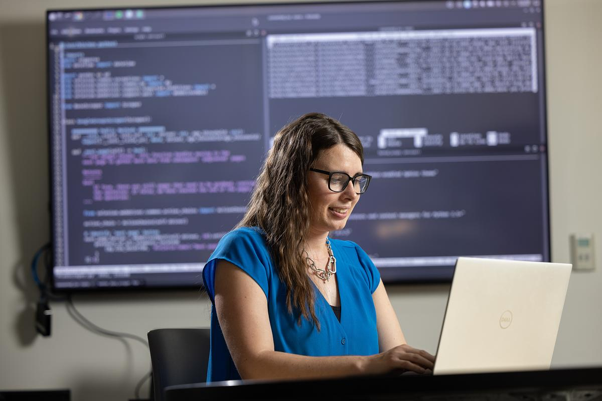

The MPaCT Lab at
Northern Arizona University
A $13 million shared-use research facility dedicated to microelectronics processing, semiconductor metrology, and hands-on workforce training — open to NAU, external researchers, and industry partners nationwide.
Advancing Semiconductor Research & Education
The Microelectronics Processing and Characterization Testing (MPaCT) Lab was established to give Northern Arizona University a research-grade semiconductor facility — bridging the gap between classroom instruction and hands-on fabrication, metrology, and materials characterization.
Housed in Building 98E and supported by state, federal, and industry funding, the facility enables faculty, graduate students, and external collaborators to conduct publishable research without leaving campus. From thin-film deposition to nanoscale imaging, the lab covers the full semiconductor workflow under one roof.

Building Arizona's Innovation Infrastructure
Arizona has attracted over $100 billion in semiconductor capital investment in recent years. NAU is building the research and training infrastructure that Northern Arizona needs to participate in that growth.
Research Infrastructure
The lab provides metrology, deposition, and characterization capabilities that previously required sending samples out of state. Faculty and graduate students now conduct thin film, nanomaterial, and device research on campus.
Workforce Development
In direct partnership with TSMC, Intel, and Microchip Technology, NAU has developed hands-on training programs that produce process technicians and engineers ready for the fab floor from day one.
Industry Services
Companies use the lab for contract metrology, failure analysis, and R&D prototyping on a fee-for-service basis. We also develop custom training programs for corporate partners across the semiconductor supply chain.
Colleges & Research Areas We Serve
The MPaCT Lab supports researchers across multiple NAU colleges and disciplines — from physics and engineering to environmental science and beyond.
College of Engineering, Informatics & Applied Sciences
- Semiconductor device fabrication
- MEMS & sensor prototyping
- Thin-film process development
College of the Environment, Forestry & Natural Sciences
- Nanomaterials characterization
- Surface & interface analysis
- Environmental materials research
Department of Chemistry & Biochemistry
- Thin-film & surface chemistry
- XRD crystallography
- Spectroscopic analysis
Department of Astronomy & Planetary Science
- Detector & optics coatings
- Instrument component fabrication
- Materials for space applications
Publication Acknowledgement
Research conducted using MPaCT Lab equipment or staff assistance should include the following acknowledgement in any resulting publications, presentations, or reports:
"This work was performed in part at the Microelectronics Processing and Characterization Testing Lab (MPaCT) at Northern Arizona University, Flagstaff, AZ."
Consistent acknowledgement across publications helps the university track facility usage and justify continued investment in shared research infrastructure.
Start Your Research Here
Whether you're an NAU student, visiting researcher, or industry engineer — the MPaCT Lab is ready to support your work. Get in touch to discuss access, training, or partnership opportunities.